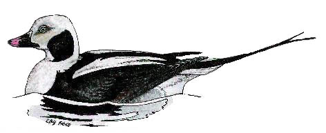

Long-tailed Duck
A rare winter visitor to the reservoir, with 6 birds recorded.

12/03/61 - Single adult male. (DEP)
17/12/61 - Single 1st winter male. (DEP)
09/11/67 - Single bird. Seen again on 26/11. (DEP)
21/11/83 - 2 birds thought to be 1st winter male & female were shot on 23/11 & recorded as "unusual ducks"
19/10/99 - Juvenile/1st winter. Seen from 17:00 to 18:12 when it flew off. (DWH)